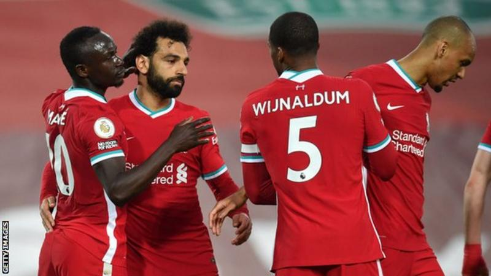

Recent news

Newcastle United beat the Foxes 4-2 on Friday and Jurgen Klopp's men took full advantage by moving within six points of the top four with four games remaining - while Leicester have three. Sadio Mane opened the scoring against his former club, heading home Mohamed Salah's cross moments after Alisson had made two saves in quick succession. Alisson gifted Southampton a chance to equalise late in the game when he passed straight to Che Adams, but the Brazil goalkeeper made amends by saving the Scotland striker's shot. Spain midfielder Thiago Alcantara then scored his first Liverpool goal in stoppage time to hand Klopp his 100th win at Anfield in all competitions. Southampton are still not safe from relegation but their Premier League status could be secured when West Bromwich Albion and Fulham play later this weekend.
Hot-news
Donald Trump's ban from Facebook and Instagram has been upheld by Facebook's Oversight Board. But it criticised the indefinite nature of the ban as beyond the scope of Facebook's normal penalties. It has ordered Facebook to review the decision and "justify a proportionate response" that is applied to everyone, including ordinary users. The former president was banned from both sites in January following the Capitol Hill riots..